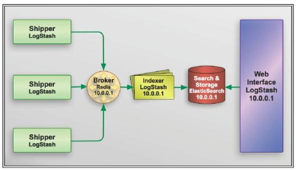

配置语法
Logstash 社区通常习惯用 shipper，broker 和 indexer 来描述数据流中不同进程各自的角色。如下图：

不过我见过很多运用场景里都没有用 logstash 作为 shipper，或者说没有用 elasticsearch 作为数据存储也就是说也没有 indexer。所以，我们其实不需要这些概念。只需要学好怎么使用和配置 logstash 进程，然后把它运用到你的日志管理架构中最合适它的位置就够了。
语法
Logstash 设计了自己的 DSL —— 有点像 Puppet 的 DSL，或许因为都是用 Ruby 语言写的吧 —— 包括有区域，注释，数据类型(布尔值，字符串，数值，数组，哈希)，条件判断，字段引用等。
区段(section)
Logstash 用 {} 来定义区域。区域内可以包括插件区域定义，你可以在一个区域内定义多个插件。插件区域内则可以定义键值对设置。示例如下：
input {
stdin {}
syslog {}
}
数据类型
Logstash 支持少量的数据值类型：
- bool
debug => true
- string
host => "hostname"
- number
port => 514
- array
match => ["datetime", "UNIX", "ISO8601"]
- hash
options => {
key1 => "value1",
key2 => "value2"
}
注意：如果你用的版本低于 1.2.0，哈希的语法跟数组是一样的，像下面这样写：
match => [ "field1", "pattern1", "field2", "pattern2" ]
字段引用(field reference)
字段是 Logstash::Event 对象的属性。我们之前提过事件就像一个哈希一样，所以你可以想象字段就像一个键值对。
小贴士：我们叫它字段，因为 Elasticsearch 里是这么叫的。
如果你想在 Logstash 配置中使用字段的值，只需要把字段的名字写在中括号 [] 里就行了，这就叫字段引用。
对于 嵌套字段(也就是多维哈希表，或者叫哈希的哈希)，每层的字段名都写在 [] 里就可以了。比如，你可以从 geoip 里这样获取 longitude 值(是的，这是个笨办法，实际上有单独的字段专门存这个数据的)：
[geoip][location][0]
小贴士：logstash 的数组也支持倒序下标，即 [geoip][location][-1] 可以获取数组最后一个元素的值。
Logstash 还支持变量内插，在字符串里使用字段引用的方法是这样：
"the longitude is %{[geoip][location][0]}"
条件判断(condition)
Logstash从 1.3.0 版开始支持条件判断和表达式。
表达式支持下面这些操作符：
==(等于),!=(不等于),<(小于),>(大于),<=(小于等于),>=(大于等于)=~(匹配正则),!~（不匹配正则）in(包含),not in(不包含)and(与),or(或), nand(非与), xor(非或)()(复合表达式),!()(对复合表达式结果取反)
通常来说，你都会在表达式里用到字段引用。为了尽量展示全面各种表达式，下面虚拟一个示例：
if "_grokparsefailure" not in [tags] {
} else if [status] !~ /^2\d\d/ or ( [url] == "/noc.gif" nand [geoip][city] != "beijing" ) {
} else {
}
命令行参数
Logstash 提供了一个 shell 脚本叫 logstash 方便快速运行。它支持以下参数：
- -e
意即执行。我们在 "Hello World" 的时候已经用过这个参数了。事实上你可以不写任何具体配置，直接运行 bin/logstash -e '' 达到相同效果。这个参数的默认值是下面这样：
input {
stdin { }
}
output {
stdout { }
}
- --config 或 -f
意即文件。真实运用中，我们会写很长的配置，甚至可能超过 shell 所能支持的 1024 个字符长度。所以我们必把配置固化到文件里，然后通过 bin/logstash -f agent.conf 这样的形式来运行。
此外，logstash 还提供一个方便我们规划和书写配置的小功能。你可以直接用 bin/logstash -f /etc/logstash.d/ 来运行。logstash 会自动读取 /etc/logstash.d/ 目录下所有 *.conf 的文本文件，然后在自己内存里拼接成一个完整的大配置文件，再去执行。
注意：
logstash 列出目录下所有文件时，是字母排序的。而 logstash 配置段的 filter 和 output 都是顺序执行，所以顺序非常重要。采用多文件管理的用户，推荐采用数字编号方式命名配置文件，同时在配置中，严谨采用 if 判断限定不同日志的动作。
- --configtest 或 -t
意即测试。用来测试 Logstash 读取到的配置文件语法是否能正常解析。Logstash 配置语法是用 grammar.treetop 定义的。尤其是使用了上一条提到的读取目录方式的读者，尤其要提前测试。
- --log 或 -l
意即日志。Logstash 默认输出日志到标准错误。生产环境下你可以通过 bin/logstash -l logs/logstash.log 命令来统一存储日志。
- --pipeline-workers 或 -w
运行 filter 和 output 的 pipeline 线程数量。默认是 CPU 核数。
- --pipeline-batch-size 或 -b
每个 Logstash pipeline 线程，在执行具体的 filter 和 output 函数之前，最多能累积的日志条数。默认是 125 条。越大性能越好，同样也会消耗越多的 JVM 内存。
- --pipeline-batch-delay 或 -u
每个 Logstash pipeline 线程，在打包批量日志的时候，最多等待几毫秒。默认是 5 ms。
- --pluginpath 或 -P
可以写自己的插件，然后用 bin/logstash --pluginpath /path/to/own/plugins 加载它们。
- --verbose
输出一定的调试日志。
- --debug
输出更多的调试日志。
设置文件
从 Logstash 5.0 开始，新增了 $LS_HOME/config/logstash.yml 文件，可以将所有的命令行参数都通过 YAML 文件方式设置。同时为了反映命令行配置参数的层级关系，参数也都改成用.而不是-了。
pipeline:
workers: 24
batch:
size: 125
delay: 5